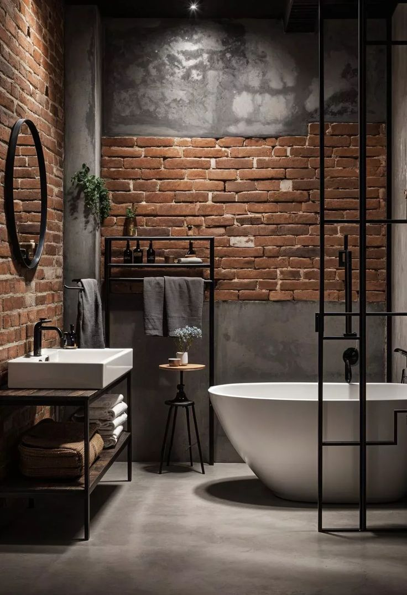
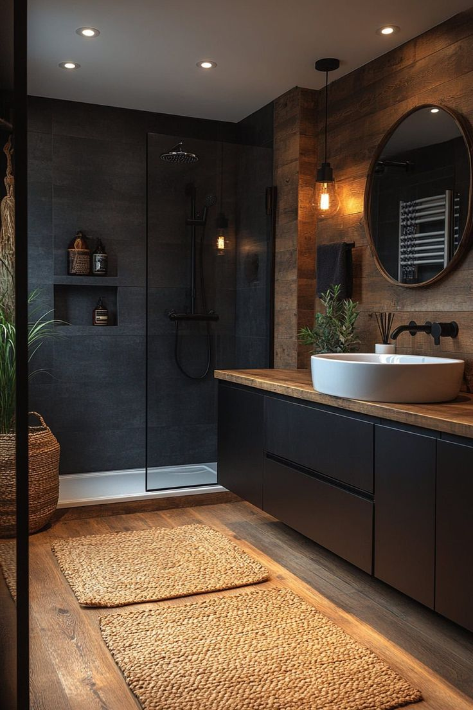
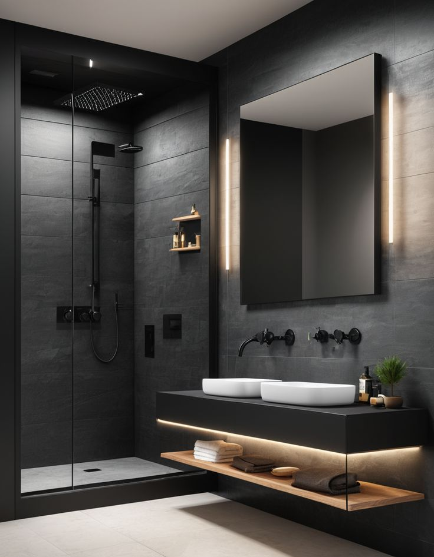

Интерьер в духе Wabi-Sabi — гармония естественного, света и пространства.
Пространство наполнено теплом и текстурами. Мы объединили минимализм с аутентичными акцентами, чтобы создать уютную и умиротворённую атмосферу. Использование природных материалов и приглушённых тонов подчёркивает эстетику Wabi-Sabi.
Это принятие несовершенства, использование натуральных материалов и спокойной палитры, стремление к простоте и душевности.
Обычно от 4 до 8 недель, в зависимости от объёма и сложности работ.
Да, стиль идеально подходит для компактных помещений, делая их уютными и функциональными.
Да, мы сопровождаем проект на всех этапах — от идеи до финального воплощения.